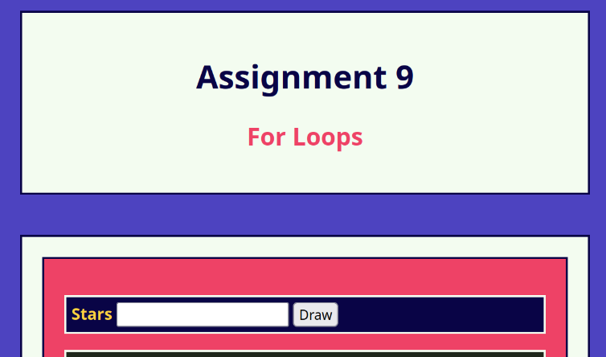

Assignments
Assignment 1: Basic HTML
Used foundational HTML to create a website page that includes header tags (h1, h2, h3), paragraphs (p), lists (ul), images (img), external links (a href), and a table.
Assignment 2: Basic CSS

Used CSS to stylize a website page with color and text decoration as well as aligned content using padding and margins.
Assignment 3: Page Layout

Used CSS Flexbox to recreate a website layout that can adapt to different window dimensions such as desktop and mobile screens.
Assignment 5: Recreate CSS

Used CSS Flexbox to recreate the UofSC School of Music's About page layout that can adapt to desktop and mobile screens.
Assignment 7: JavaScript, Buttons, Functions, and More

Used JavaScript to create a clickable counter, image randomizer when the page refreshes, and a slider that shifts a square to the right.
Assignment 8: Conditionals
Used JavaScript to create a toggable menu, a color slider with three different messages shown depending on slider value, and a picture chooser that modifies the image shown depending on what button is pressed.
Assignment 9: For Loops
Used for-loops in JavaScript to take user input and generate star shapes in random positions.
Assignment 10: Arrays
Used arrays in JavaScript to output pictures; added clickable feature which displays the picture's name and a brief description.
Assignment 13: Server Side Hello
Used Render to create a website server that says Hello World.
Project
Project Part 1: Topic Selection
Described the website topic, what pages will be on the website, and what data will be stored on the website's server.
Project Part 2: Wireframe

Created a basic wireframe for the website layout. Includes Home, About, Blog, Store, Contact, and Sign-up/Log-in pages.
Project Part 3: HTML and CSS
Recreated wireframe layout using HTML and CSS. Used placeholder images for future reference.